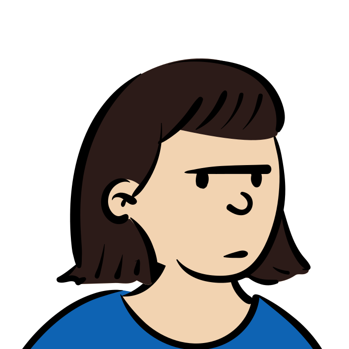
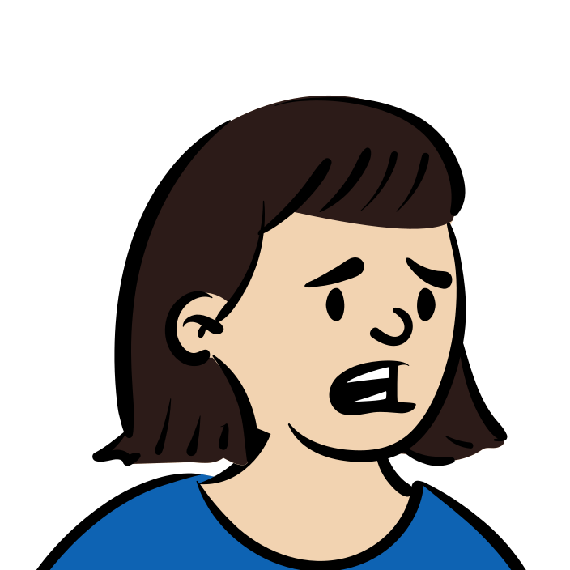
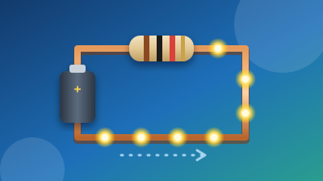
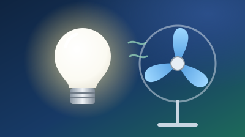
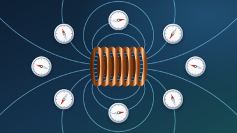
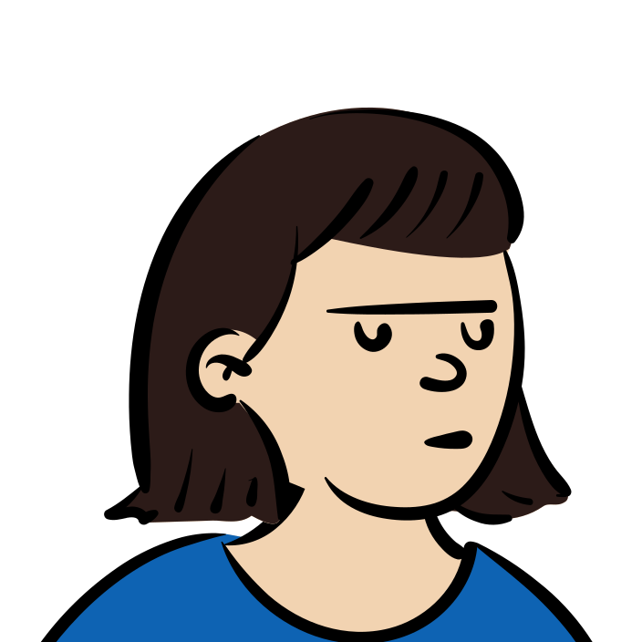
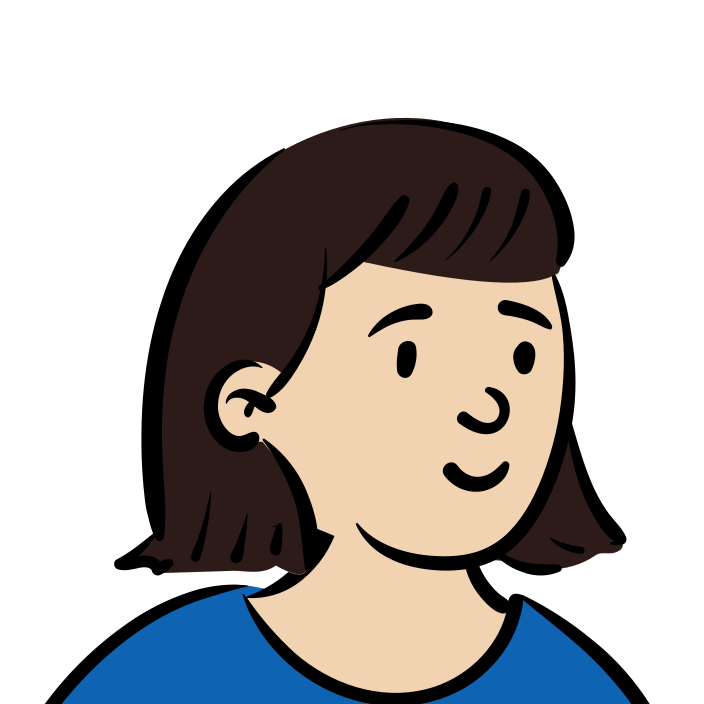

자기장
나침반
전류의 방향
N극
자기력
오늘 뭐 배웠더라…
RAS · Reading After Studying
수업이 끝난 뒤, 다시 읽고 직접 해 보는 과학
Ⅱ 지권의 변화
Ⅶ 전기와 자기
Ⅷ 별과 우주

전기는 왜 흐를까?
전류·전압·저항 · 옴의 법칙

전기 에너지를 어떻게 이용할까?
소비 전력과 전력량

코일 주변에는 무엇이 생길까?
코일 주위의 자기장
1
읽기·퀴즈
2
자기장 탐험
3
가상 탐구
4
정리·글쓰기
전류가 흐르는 코일 주변에는 무엇이 생길까?

01 · 읽기·퀴즈
자석 주위에는 자기장이 있어요
자석끼리는 서로 밀어내거나 끌어당겨요.
이때의 힘을 자기력이라고 하고,
자기력이 미치는 공간을
자기장
이라고 해요.
자기장
자기력이 미치는 공간
자기장의 방향은 무엇으로 알 수 있을까요?
1
나침반 바늘의 N극이 가리키는 방향
2
자석 겉면의 색깔
아, 이게 그 뜻이었구나
02 · 모형·시뮬레이션
코일 주위 자기장 탐험
스위치 닫기
전류 방향 바꾸기
방향을 바꾸니까… 바늘도 반대로 도네
03 · 가상 실험
기록지 · 바늘의 N극 방향 그리기
내 실험 결과
그림 Ⅶ-12 막대자석
막대자석 주위와 비슷하다
막대자석 주위랑 비슷하네
04 · 정리·글쓰기
내 말로 정리하기
전류가 흐르는 코일 주위에는
이 생겨요.
을 바꾸면 자기장의 방향도 반대가 돼요.
내 말로 설명하기
코일에 전류가 흐르면 주위에 자기장이 생겨서 나침반 바늘이 돌아가요.

RAS
· Reading After Studying
수업이
끝난
뒤,
다시
읽고
직접
해
보는
과학